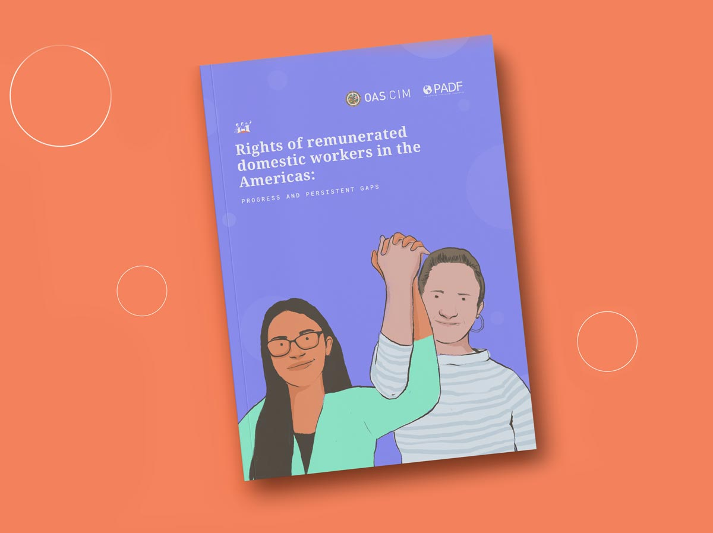
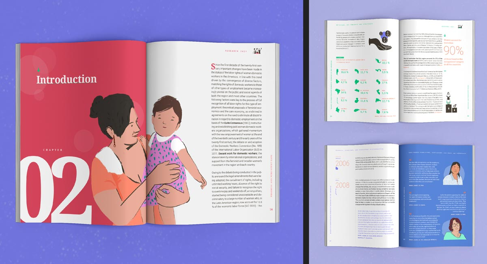
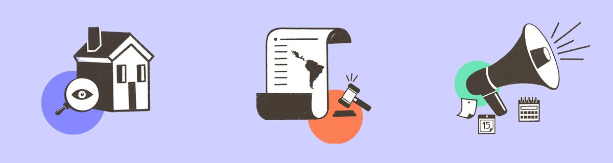
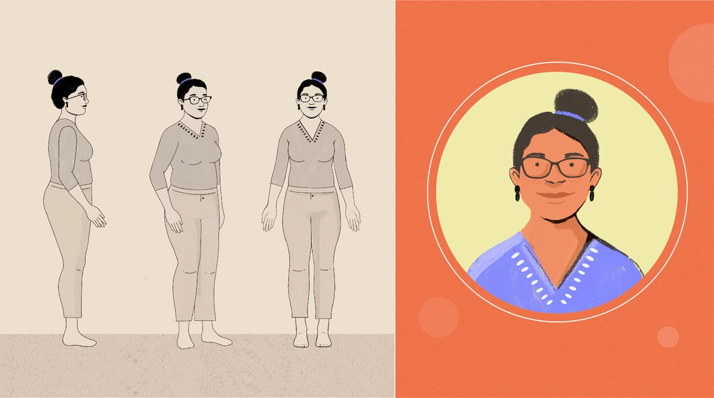
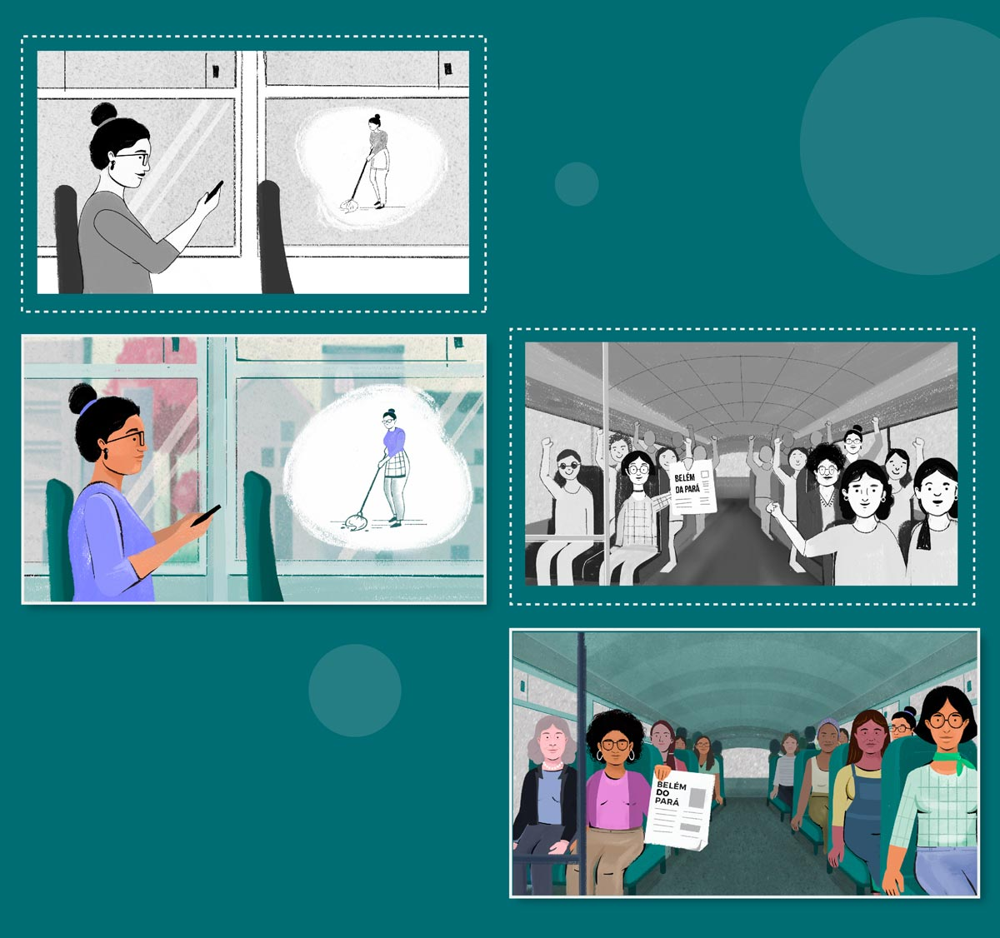
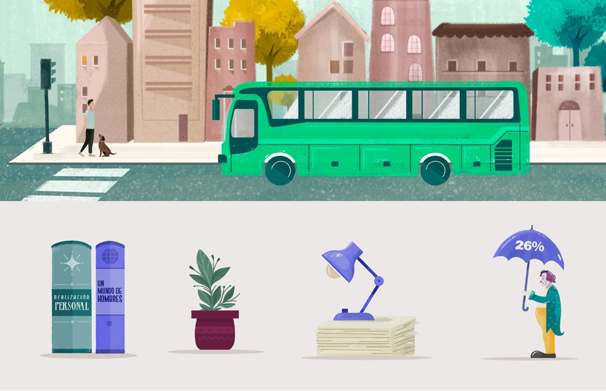
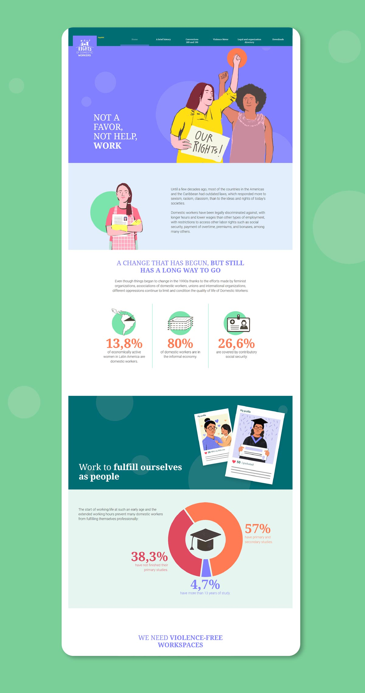
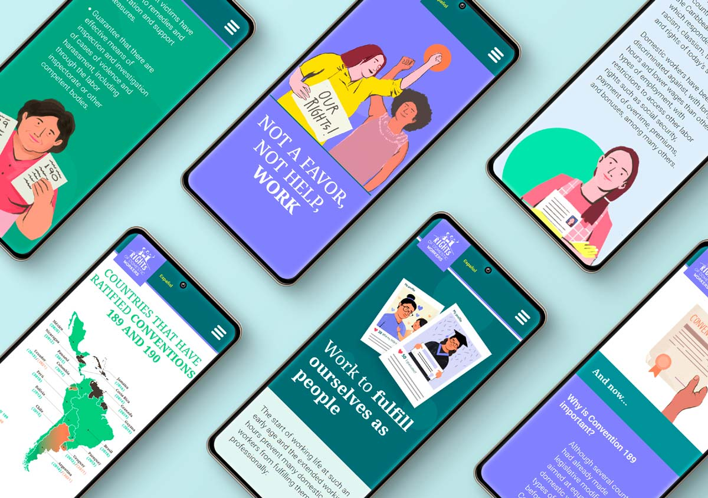

Domestic Workers
> Estratgic communications
NOT A FAVOR, NOT HELP, WORK!
       About the Project
What is the situation of domestic workers in Latin America?
We have developed a comprehensive communication system for the Organization of American States (OAS), integrating multiple formats and platforms to disseminate information about the state of domestic workers in the region. Our narratives establish a close connection with the audiences through careful and meticulous representations, illustrating how domestic work has become one of the most valuable jobs for sustaining life.
Merely ratifying an agreement is not enough for the recognition of the tasks developed by domestic workers. Every party involved, from the creation of the normative framework to law implementation and compliance verification, must actively participate.
To ensure effective communication, we understand the importance of adapting the presented information to the interests and specific situations of each party involved. This facilitates the comprehension of the law and contributes to informed decision-making. Consequently, we have established two different communicative lines: one tailored for employers and decision-makers, and another for domestic workers.
Given the various access possibilities and technologies, coupled with the diverse contexts in which domestic work takes place, we have implemented a range of communication strategies. These include audio messages for WhatsApp, content for Instagram and Facebook, a light and fast-loading microsite, as well as videos and concise guides to effectively disseminate the information.
Technical information:
Client: CIM | OAS (Inter-American Commission of Women)
Year: 2022
Delivered Products: 1 bilingual microsite, 2 videos, 2 guides, 4 audios to share via WhatsApp, 1 report, 1 content grid for social media.
Links: